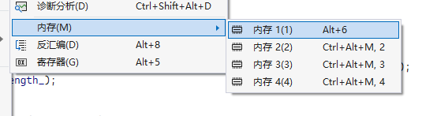
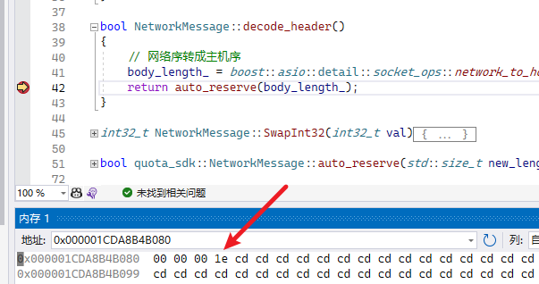
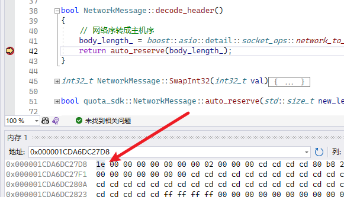

主机序、网络序，通过调试器，直接观察
文章目录
在计算机的发展历史中，如何存储数据并没有统一的标准。
字节的排列方式有两个通用规则。例如，将一个多位数的低位放在较小的地址处，高位放在较大的地址处，则称小端序；反之则称大端序。在网络应用中，字节序是一个必须被考虑的因素，因为不同机器类型可能采用不同标准的字节序，所以均按照网络标准转化。
按照阅读习惯，大端字节序更符合从左到右的阅读顺序。
处理器体系
- x86、MOS Technology 6502、Z80、VAX、PDP-11 等处理器为小端序
- Motorola 6800、Motorola 68000、PowerPC 970 等处理器为大端序
- ARM、PowerPC（除PowerPC 970外）、DEC Alpha、SPARC V9、MIPS、PA-RISC及IA64的字节序是可配置的
网络序
网络传输一般采用大端序，也被称之为网络字节序，或网络序。IP协议中定义大端序为网络字节序。
Berkeley套接字定义了一组转换函数，用于16和32bit整数在网络序和本机字节序之间的转换。
#include <arpa/inet.h>
uint32_t htonl(uint32_t hostlong); //把uint32_t类型从主机序转换到网络序
uint16_t htons(uint16_t hostshort); //把uint16_t类型从主机序转换到网络序
uint32_t ntohl(uint32_t netlong); //把uint32_t类型从网络序转换到主机序
uint16_t ntohs(uint16_t netshort); //把uint16_t类型从网络序转换到主机序
如果选用asio作为网络库，内置的命名空间中有跨平台适配的函数名
- boost::asio::detail::socket_ops::network_to_host_long
- boost::asio::detail::socket_ops::network_to_host_short
- boost::asio::detail::socket_ops::host_to_network_long
- boost::asio::detail::socket_ops::host_to_network_short
visual studio 调试器
调试模式下，选中调试菜单，窗口，勾选内存窗口
在visual studio中，可以直接在调试器中查看内存中的数据，如下图所示

查看内存的方式
- 窗口直接输出 &变量名，跳转到对应变量地址
- 如果变量原本就是指针，双击选中变量，拖动到内存窗口，展示对应地址的内容
- 如果变量不是指针，添加到计算窗口，获取地址，然后手工复制到内存窗口
举个栗子
收到一段数据，存储到buffer对象中，将网络序转成主机序，得到body_length等于 30，服务端划分了四个字节用于传出此数据。
bool NetworkMessage::decode_header()
{
// 网络序转成主机序
body_length_ = boost::asio::detail::socket_ops::network_to_host_long(*(int *)buffer_.data());
return auto_reserve(body_length_);
}
大端字节序：在内存窗口中，观察 buffer_ 的内容

小端字节序：在内存窗口中，观察 body_length_ 的内容
